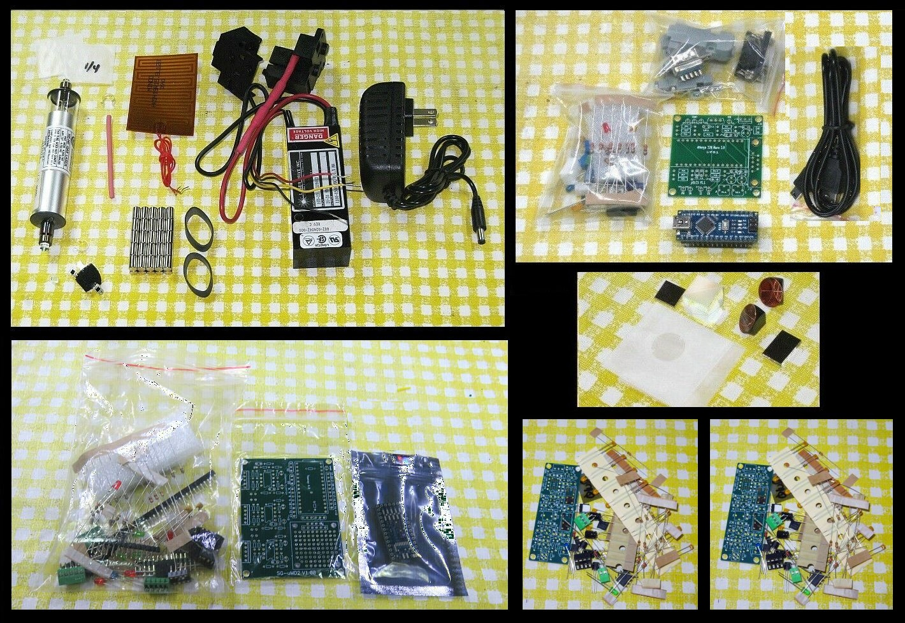
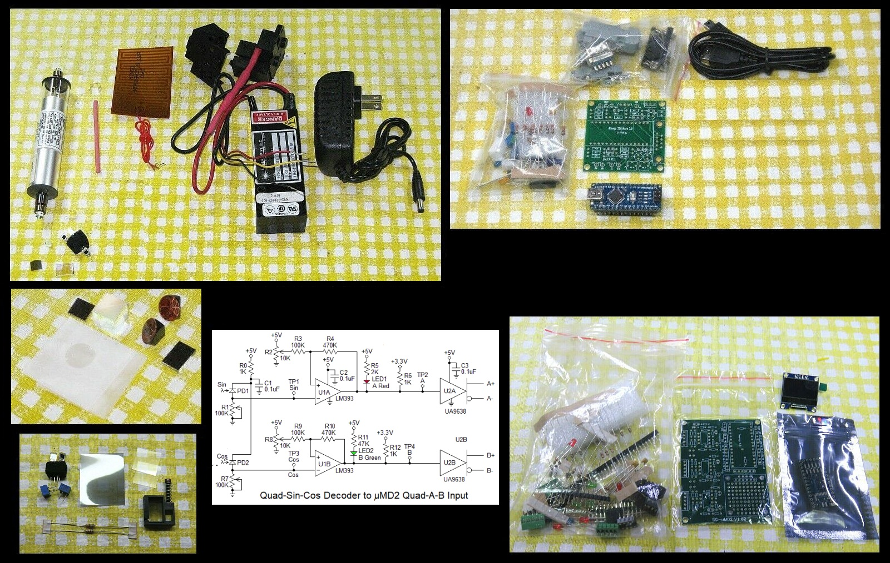
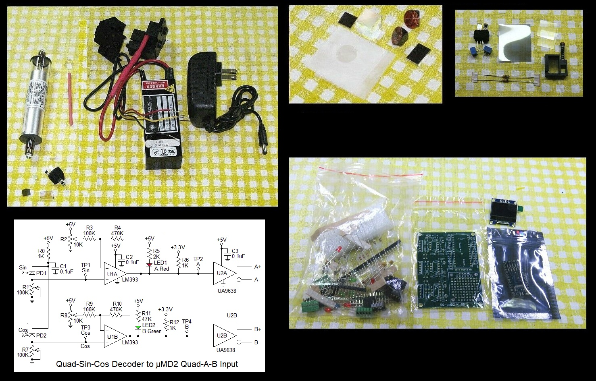
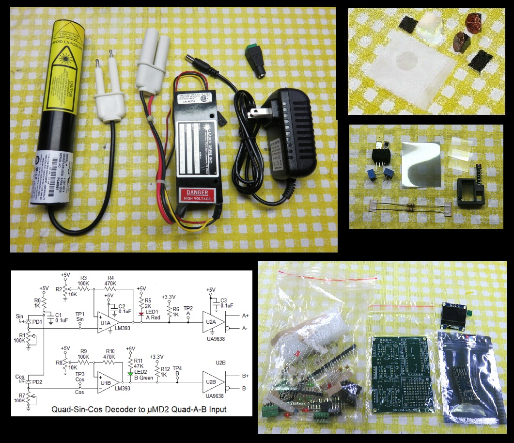
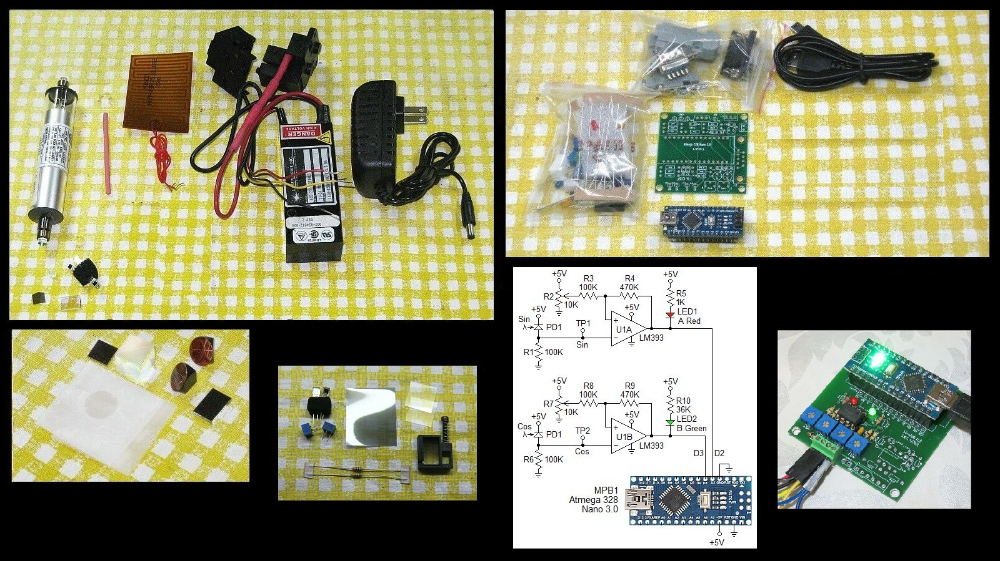
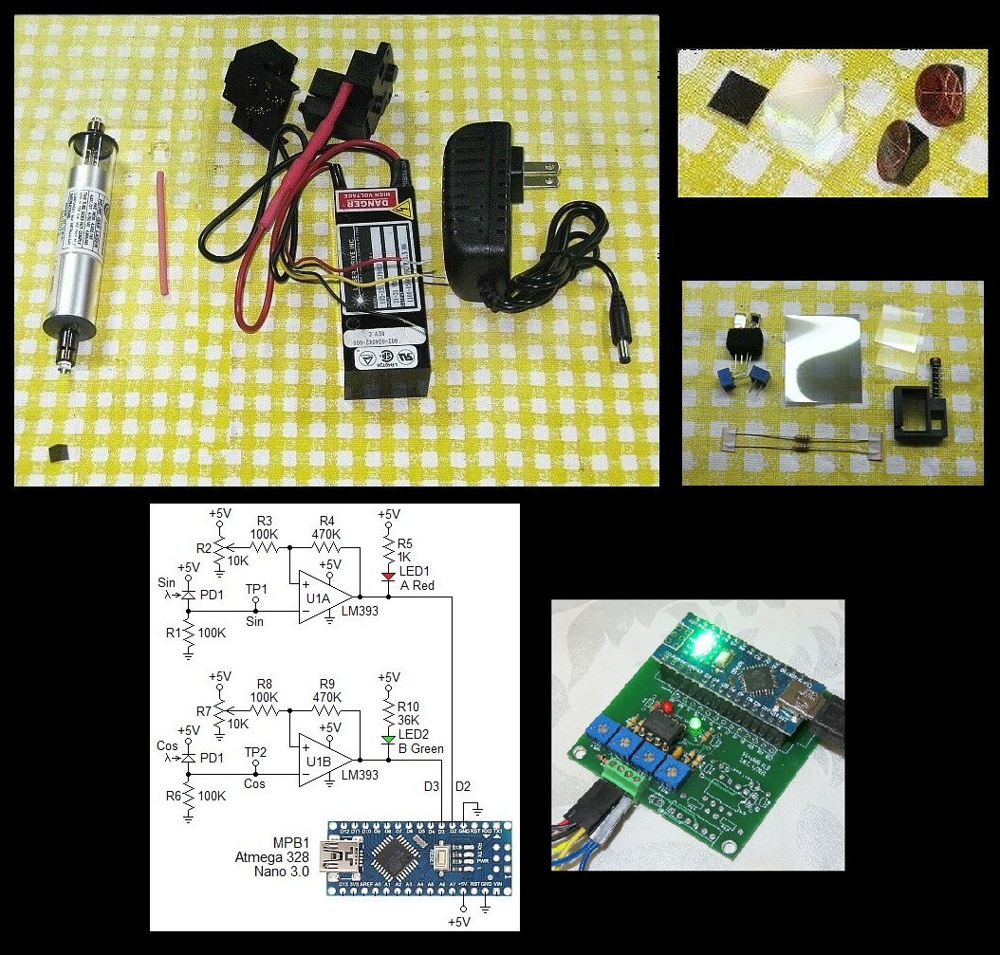
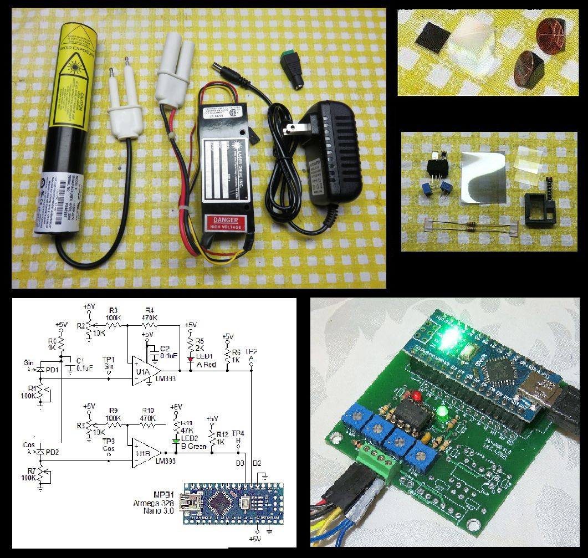

This document contains guidelines and links to other manuals for the construction of a homodyne or heterodyne interferometer displacement measuring system using a HeNe laser and a microcontroller-based measurement readout. There are kits providing various levels of performance from really basic to something similar to a commercial system.
The brief summary is that the heterodyne kit (there is only one version) has the best performance and would be useful in a serious application. The homodyne kits have very limited slew rate unless augmented with high speed front-end electronics, which are not provided here at least.
Since the lasers and measurement readouts are also available as separate kits, links will be provided to their detailed manuals. Only information not available elsewhere will be elaborated on in this document.
The heterodyne and homodyne kits consist of 4 parts:
These parts of the system can be constructed and tested separately.
For a general introduction to this technology, see LIPM: An Inexpensive Laser Interferometer-Based Precision Measurement System. This is highly recommended reading prior to construction.
There are several variations on this kit:
The typical parts are shown below:

Links:
The typical parts are shown below:

Links:
The detector in all the homodyne kits is quite primitive consisting of a pair of biased photodiodes with a Quarter WavePlate (QWP) to shift the phase of one of the signals by 90 degrees. Thus the bandwidth is quite limited. But a better one could be constructed relatively easily.
Parts for a simple Quad-Sin-Cos to Quad-A-B converter with RS422 drivers for µMD2 are included. The schematic is shown in the above graphic. There is no PCB for this but a Perf. board is provided on which it can be constructed. A solderless breadboard could also be used. available for a couple bucks on eBay. The RS422 drivers at the output can be dispensed with if µMD2 is set up for single-ended inputs as described in its assembly manual.
The typical parts are shown below:

Links:
The detector in all the homodyne kits is quite primitive consisting of a pair of biased photodiodes with a Quarter WavePlate (QWP) to shift the phase of one of the signals by 90 degrees. Thus the bandwidth is quite limited. But a better one could be constructed relatively easily.
Parts for a simple Quad-Sin-Cos to Quad-A-B converter with RS422 drivers for µMD2 are included. The schematic is shown in the above graphic. There is no PCB for this but a Perf. board is provided on which it can be constructed. A solderless breadboard could also be used. available for a couple bucks on eBay. The RS422 drivers at the output can be dispensed with if µMD2 is set up for single-ended inputs as described in its assembly manual.
These lasers produce a narrow beam (less thatn 1 mm in diameter), but because the PLD needs to be small, the diameter at the detector should be similar for both the reference and measurement beams. However, if desired, a beam expander can be added. Ask.
Note that while this kit has the µMD2 measurement display, the performance is limited mostly by the frequency response of the Quad-Sin-Cos detector, which is quite limited. So it may be no better than the minimal version using µMD0.
The typical parts are shown below:

Plug the high voltage "Alden" connectors of the laser head and power supply together securely if not already attached. The power supply will probably have a DC connector so it just needs to be plugged into the included wall adapter.
Orient the laser head so that the polarization axis is at 45 degrees. It will probably be marked but if not, is easily determined with a linear polarizer.
Links:
Since switching between Het and Hom requires reconfiguring the laser itself, among other things, the combined kit is not really recommended and currently disabled in the eBay listing. But if really interested, contact me.
This is similar to the homodyne system above but but with the µMD0 display.

Links:
Most of the tubes have a high divergence beam - around 8 mR. Therefore a collimating lens is included, probably in the bag with the optics. It has a focal lengh of 3-4 inches. Placing it close to the output bracket of the tube will result a beam that remains parallel enough for a short range interferometer (probably 1 or 2 feet). For longer distances, HP/Agilent beam expanders are available - ask. These result in a 3 or 4 mm beam which would remain fairly parallel over several feet.
The typical parts are shown below:

Links:
Set up the laser as it would be for stabilization EXCEPT that the polarization axes of the tube should be oriented at ±45 degrees, NOT 0/90 degrees. More on this below.
The tubes provided in the minimal homodyne kits is well behaved (so it could be used in a stabilized laser as another project!). These have two axes of polarization at right angles to one-another whose orientation is fixed for the life of the tube. The amplitude of the power in each axis varies during mode sweep. A linear polarizer could be installed at 45 degrees to the polarization axes to convert the tube in effect to be very similar to a linearly polarized laser, but at the loss of more than one half the power. A better option is to orient the tube so that the polarization axes are at 45 degrees. The PBS cube in the interferometer will than see one half the power in both polarization axes and no power will be lost. However, interestingly, the Path Length Difference (PLD) for optimum performance will be at one tube cavity length, not at 0. For the ~6 inch tube and Linear Interferometer (LI), that is around 2.75 inches; for the Plane Mirror Interferometer (PMI) it is around 1.375 inches. If a PLD of 0 is used, the behavior is, well, very interesting. ;-)
In case you're curious, the reason there isn't an equivalent "Minimal Heterodyne Kit with Unstabilized Zeeman Laser" is that such a laser would generally not produce a split/beat frequency during part of mode sweep. For homodyne, as long as there is always at least one longitudinal mode present (with no gaps due to mode hops), the interferometer will work properly subject to the constraint that the path length difference is less than a few cm.
These laser produce a narrow beam (less thatn 1 mm in diameter), but because PLD needs to be small, the diameter at the detector should be similar for both the reference and measurement beams. However, if desired, a beam expander can be added. Ask.
The conversion from Quad-Sin-Cos to µMD0 is all done on the µMD0 PCB.
Some of the photos show µMD0 constructed on a solderless breadboard, but all these kits now come with the SG-µMD0 PCB instead. If you would still like to use a solderless breadboard (at least initially, or you are not equipped for fine soldering) and one isn't included, they are only a couple bucks on eBay.
The typical parts are shown below:

Plug the high voltage "Alden" connectors of the laser head and power supply together securely if not already attached. The power supply will probably have a DC connector so it just needs to be plugged into the included wall adapter.
Orient the laser head so that the polarization axis is at 45 degrees. It will probably be marked but if not, is easily determined with a linear polrizer.
Links: